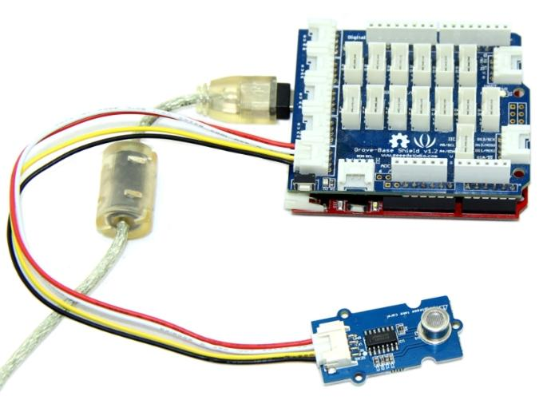
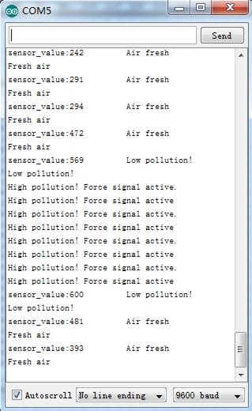

This sensor is designed for comprehensive monitor over indoor air condition. It's responsive to a wide scope of harmful gases, as carbon monoxide, alcohol, acetone, thinner, formaldehyde and so on. Due to the measuring mechanism, this sensor can not output specific data to describe target gases' concentrations quantitatively. But it's still competent enough to be used in applications that require only qualitative results, like auto refresher sprayers and auto air cycling systems.

As described in Introduction, this sensor does better in providing qualitative results over a wide scope of target gases. In this demo, we define 4 statuses for reference in the .cpp file. They are:
We encapsulated the judge structure in .cpp file. You can find your way to modify the thresholds in it.
Let's start to try it out!
1. Connect the Sensor to A0 port of Grove - Base Shield.

2. Download the File:AirQuality_Sensor Library.
3. Wait 2 min for heat-up of the sensor. Then open the example below by the path:File -> Example ->AirQuality_Sensor->AirQuality_Sensor.
/* AirQuality Demo V1.0. connect to A1 to start testing. it will needs about 20s to start * By: http://www.seeedstudio.com */ #include "AirQuality.h" #include "Arduino.h" AirQuality airqualitysensor; int current_quality =-1; void setup() { Serial.begin(9600); airqualitysensor.init(14); } void loop() { current_quality=airqualitysensor.slope(); if (current_quality >= 0)// if a valid data returned. { if (current_quality==0) Serial.println("High pollution! Force signal active"); else if (current_quality==1) Serial.println("High pollution!"); else if (current_quality==2) Serial.println("Low pollution!"); else if (current_quality ==3) Serial.println("Fresh air"); } } ISR(TIMER2_OVF_vect) { if(airqualitysensor.counter==122)//set 2 seconds as a detected duty { airqualitysensor.last_vol=airqualitysensor.first_vol; airqualitysensor.first_vol=analogRead(A0); airqualitysensor.counter=0; airqualitysensor.timer_index=1; PORTB=PORTB^0x20; } else { airqualitysensor.counter++; } }
4. Upload the code. Please click here if you do not know how to upload it.
5. Open serial monitor.

To adjust the thresholds and indicating messages, refer the judge structure below in .cpp file.
int AirQuality::slope(void) { while(timer_index) { if(first_vol-last_vol>400||first_vol>700) { Serial.println("High pollution! Force signal active."); timer_index=0; avg_voltage(); return 0; } else if((first_vol-last_vol>400&&first_vol<700)||first_vol-vol_standard>150) { Serial.print("sensor_value:"); Serial.print(first_vol); Serial.println("\t High pollution!"); timer_index=0; avg_voltage(); return 1; } else if((first_vol-last_vol>200&&first_vol<700)||first_vol-vol_standard>50) { //Serial.println(first_vol-last_vol); Serial.print("sensor_value:"); Serial.print(first_vol); Serial.println("\t Low pollution!"); timer_index=0; avg_voltage(); return 2; } else { avg_voltage(); Serial.print("sensor_value:"); Serial.print(first_vol); Serial.println("\t Air fresh"); timer_index=0; return 3; } } return -1; }
1.You should have got a raspberry pi and a grovepi or grovepi+.
2.You should have completed configuring the development enviroment, otherwise follow here.
3.Connection
4.Navigate to the demos' directory:
cd yourpath/GrovePi/Software/Python/
nano grove_air_quality_sensor.py # "Ctrl+x" to exit #
import time
import grovepi
# Connect the Grove Air Quality Sensor to analog port A0
# SIG,NC,VCC,GND
air_sensor = 0
grovepi.pinMode(air_sensor,"INPUT")
while True:
try:
# Get sensor value
sensor_value = grovepi.analogRead(air_sensor)
if sensor_value > 700:
print "High pollution"
elif sensor_value > 300:
print "Low pollution"
else:
print "Air fresh"
print "sensor_value =", sensor_value
time.sleep(.5)
except IOError:
print "Error"
5.Run the demo.
sudo python grove_air_quality_sensor.py
If you want to make some awesome projects by Air Quality Sensor, here are some projects for reference.
With this demo, we can see that:

With this demo, we can see the air quality data on 4-Digit Display.

Copyright (c) 2008-2016 Seeed Development Limited (www.seeedstudio.com / www.seeed.cc)